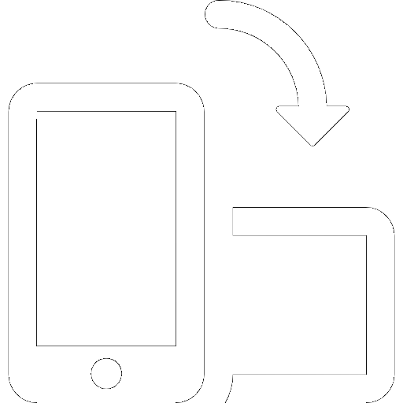

Bitte drehe dein Gerät um 90°, um das Spiel starten zu können.

Links:
Rechts:
Springen:
Flasche werfen:
Es gibt 3 unterschiedliche Gegner:
Kleine Hühnchen, normale Hühnchen und einen Endgegner.
Kleine und normale Hühnchen können mit einem Sprung von oben getötet werden. Der Endgegner kann
nur getötet werden, indem man ihn mit den Flaschen abwirft, die überall im Spiel verteilt sind und
eingesammelt werden können.
Es ist auch möglich mit den Flaschen die anderen Gegner zu töten, allerdings sollte darauf geachtet
werden, noch
ausreichend viele Flaschen für den Endgegner zu haben.
Impressum
Angaben gemäß §5 DDG:
Christian Sobotta
Postanschrift:
Platzhalter Straße 1
01234 Diesestadt
Kontakt:
E-Mail: chris.k2708@gmail.com
Vertreten durch:
Christian Sobotta
Hinweise zur Website
Weiterbildung zum Fullstack Entwickler bei:
Developer Akademie GmbH
Tassiloplatz 25
81541 München
HRB 269921, AG München
Geschäftsführung:
Linus Kauer, Arno Müller, Manuel HinzE-Mail: info@developerakademie.com